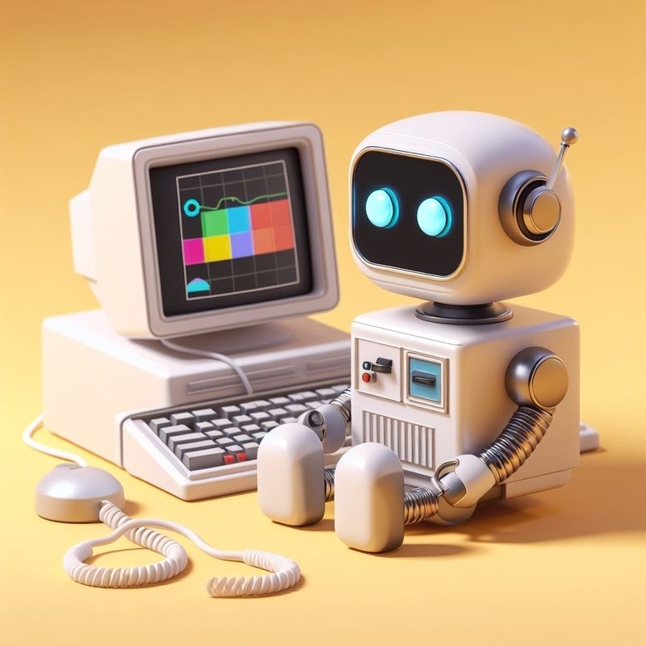

// personal site
Hi, I'm Jose
I build small, careful software — data plumbing, internal tools, and the occasional thing that talks back.
$ whoami
I’m a developer based in Miami. Most of my work lives where messy data meets people who need a straight answer from it — pipelines, dashboards, and the small internal tools nobody writes a press release about.
Before software I spent years in a field that taught me to read a system before touching it. That habit stuck. I like problems that reward patience, codebases that stay boring, and interfaces that get out of the way.
Currently sharpening: distributed systems, Python at scale, and the long tail of making things actually deploy.
$ ls ~/projects
-
project-one
One sentence on what it does and who it was for. Lead with the outcome, not the stack.
-
project-two
One sentence on what it does and who it was for. Lead with the outcome, not the stack.
-
project-three
One sentence on what it does and who it was for. Lead with the outcome, not the stack.
$ contact --email

Open to interesting work and easy to reach. Email is best; I read everything and answer most of it.
- emailyou@example.com
- github@Zeaxanthin80
- linkedinin/your-handle
- resumeresume.pdf